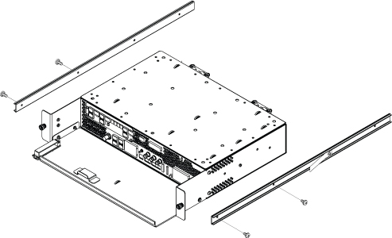

Removing the Integrated Control Engine (ICE) from the system cabinet.
Prerequisites
Personnel requirements
Required persons
Preliminary requirements
Procedure
Finalization
1
-
30 minutes
-
Tools and test equipment
Item
Quantity
Part number
Manufacturer
Nonmagnetic Titanium Service Tool Kit, Small Set
1 Kit
5113258
-
Nonmagnetic Titanium Service Tool Kit, Large Set
1 Kit
5112581
-
Procedure
Make sure that you have read and understood the electrical safety requirements before starting this procedure. See Electrical Safety.
Notice
Risk of ICN damage
The ICNs have software running on disk drives that can be corrupted if not shut down properly. Failure to properly power down an ICN can also result in premature ICN failure.
NEVER use the power button on the front to turn an ICN ON/OFF. Follow the procedure referenced below for removing power to the ICN chassis.
From the Common Service Desktop, turn off the ICN(s) (see ICN On/Off Procedure).
Press the release tabs in on each side and pull the ICE forward.
Note Hold the ICE carefully when you remove it so that it does not fall.
Detach the slide rails from the ICE High Level Assembly (HLA). Install the slide rails to the new FRU.
Figure 1. Slide rails

Note When you install the slide rail on the side of the ICE, install the screw near the rear of the ICE in the hole shown below. This keeps the rail straight.Figure 2. Screw installed through slide rail